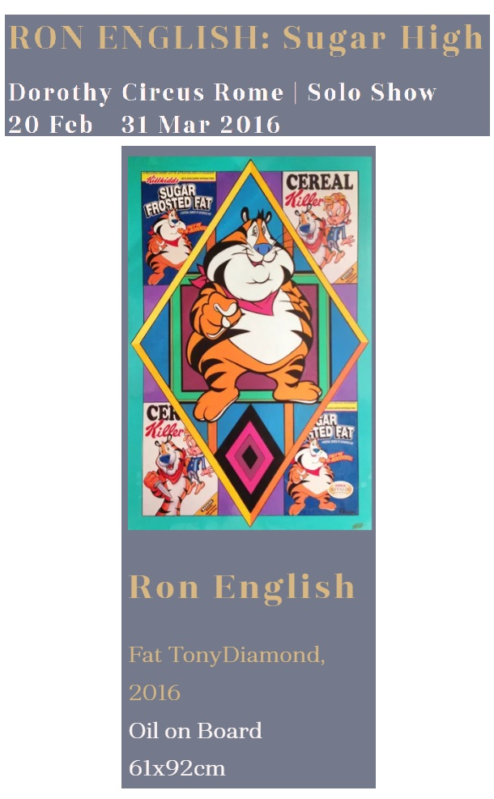

Exhibitions
Sugar High, Dorothy Circus Gallery, Rome, Italy, February 20–March 31, 2016.
Notes
Also known as Fat TonyDiamond.
This painting references Tony the Tiger, the mascot created for Kellogg’s Frosted Flakes.
Ancillary Documentation


Selected Online Circulation
Selected examples of the work’s online circulation, reproduction, or discussion. This list is not exhaustive; it is intended to document representative appearances of the image beyond formal exhibition and publication records.